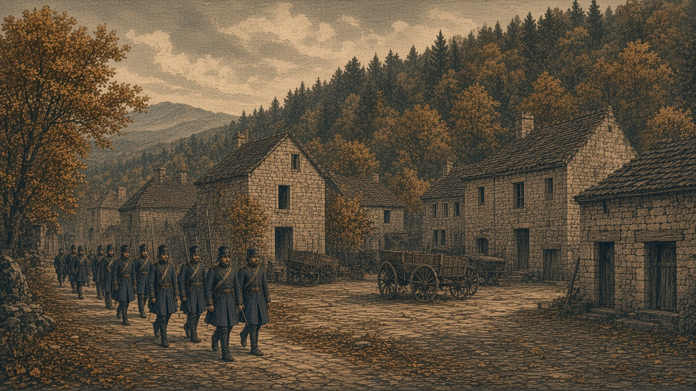

エスペランサ皇国、ついに滅亡
チェス軍、三度目の首都を占領
相次ぐ遷都も実らず 東の森でも皇国軍敗退

【総合部】チェス＝シロバキア共和国軍がエスペランサ皇国の首都エスペランサ（81,63）を占領した。二度の首都陥落を経て、前期に三度目の遷都を行った皇国だったが、新たな都もわずか一期で奪われ、国家としての存続に終止符を打たれた。
皇国が首都を置いた町はチェス領に編入された。長く続いた両国の戦争は、皇国側の度重なる失地と最後の首都陥落によって、決定的な結末を迎えた。
首都の南に位置する「東の森」では、チェス軍と皇国軍の第2軍歩兵が交戦した。今期、チェス軍が皇国軍に与えた損害は3,000人、皇国軍がチェス軍に与えた損害は300人に上った。
三たび都を失い、皇国滅ぶ
エスペランサ皇国は、チェス軍の攻勢を受けて首都の移転を繰り返してきた。
最初の首都を奪われ、移転先の町も陥落。前期には新たな町へ政府を移し、再び「エスペランサ」の名を掲げた。
だが、三度目の遷都から間もなく、チェス軍が新都を占領した。
前号、新都では役所の移転に伴い、文書箱や家財を積んだ荷車が行き交っていた。
「今度の都は、いつまで持つのだろう」
本紙が前号に伝えた住民の言葉である。その懸念は、わずか一期で現実となった。
新都に掲げられた皇国の名は、長くは続かなかった。チェス軍の進出によって領有が変わり、エスペランサ皇国は国家としての歴史を閉じた。
東の森、チェス軍が圧倒
首都の南に広がる「東の森」でも、皇国軍は厳しい戦いを強いられた。
チェス軍が皇国軍に与えた損害は3,000人。皇国軍が相手に与えた損害は300人だった。
前期の戦果はチェス軍2,800人、皇国軍500人。二期を合わせると、チェス軍が与えた損害は5,800人、皇国軍は800人となる。
皇国軍は劣勢のなか反撃を続けたものの、首都を守り切ることはできなかった。
東の森における最後の交戦経過は3面で詳報する。
黒潮首都で歩兵一部隊が消滅
カペレナ王国と黒潮自治国の戦線でも戦闘が続いた。
カペレナ軍の北部攻撃隊は、黒潮の首都に展開する第1方面軍歩兵を攻撃。黒潮軍も応戦したが、この歩兵部隊は交戦の末に消滅した。
今期、カペレナ軍が黒潮軍に与えた損害は3,800人、黒潮軍がカペレナ軍に与えた損害は2,900人。累計戦果はそれぞれ136,200人、92,400人となった。
海上ではカペレナの巡洋艦が黒潮の駆逐艦に砲弾を命中させた。駆逐艦は沈没を免れた。
黒潮は首都の領有を維持しているが、その防衛を担っていた歩兵部隊の消滅により、守備態勢は新たな打撃を受けた。詳報は4面。
狐っ娘教団、隣接二国と国境条約
外交面では、狐っ娘の尻尾教団がオリョルッル王国及びなのです主義人民共和国との間で、それぞれ国境確定条約を締結した。
オリョルッル王国とは半島を東西に分割し、南部地域の領有についても合意した。教団は王国に鋼鉄600トンを提供する。
なのです主義人民共和国との条約では、同国が現在の進出範囲を越えて領土を拡大しないことを定めた。教団は第130期に500億円を送金した。
教団の幹部は、両国の押印が入った条約文書を掲げ、「我々の世代の平和は守られた」と演説した。
二つの条約の詳報は2面。